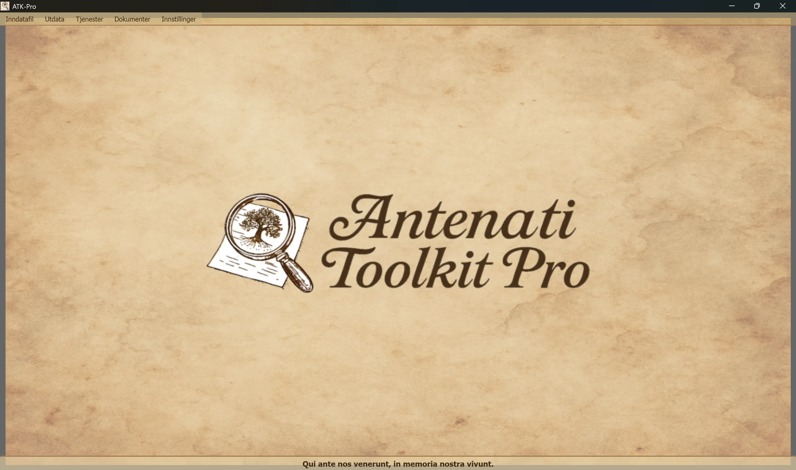

────────────────────────────────────────────────────────────────────────────────
🪟 Windows
ATK-Pro-Setup-vx.x.x.exe fra den offisielle utgivelsessiden🐧 Linux
ATK-Pro-vx.x.x.deb (Debian/Ubuntu) eller .tar.gz fra utgivelsessidensudo dpkg -i ATK-Pro-vx.x.x.deb, eller dobbeltklikk i Nautilus/Filer./ATK-Pro fra den utpakkede mappen🍎 macOS
ATK-Pro-vx.x.x.dmg fra utgivelsessiden🪟 Windows
C:\Program Files\ATK-Pro\C:\Users\[TuoNome]\Documents\ATK-Pro\output\C:\Users\[TuoNome]\Documents\ATK-Pro\input\🐧 Linux
/opt/ATK-Pro/ (deb) eller utpakket mappe (.tar.gz)~/Documents/ATK-Pro/output/~/Documents/ATK-Pro/input/🍎 macOS
/Applications/ATK-Pro.app~/Documents/ATK-Pro/output/~/Documents/ATK-Pro/input/────────────────────────────────────────────────────────────────────────────────
De tilgjengelige språkene er:
På grunnlag av dataene som var tilgjengelige ved utgangen av 2025, anslås disse språkene å dekke omtrent 98 % av etterkommere etter italienere samt italienske eller italienskspråklige miljøer over hele verden.
Ved første kjøring oppretter programmet automatisk følgende mapper:
C:\Users\[TuoNome]\Documents\ATK-Pro\output\C:\Users\[TuoNome]\Documents\ATK-Pro\output\doc\ (standardmappe for dokumenter)C:\Users\[TuoNome]\Documents\ATK-Pro\output\reg\ (standardmappe for registre)~/Documents/ATK-Pro/output/input\-mappe (valgfri, for inndatafiler)Under behandlingen opprettes midlertidige mapper for nedlastede fliser (tiles_canvas_X/) og, hvis PDF er valgt, midlertidige filer for PDF-genereringen.
Alle midlertidige mapper og filer slettes automatisk når behandlingen er ferdig.
Bare de ferdigbehandlede filene beholdes (bilder i valgte formater, PDF, manifest og metadata).
Bruk Meny → Innstillinger → «Velg utdatamapper» for å endre utdatamappene. Valgene lagres og gjenopprettes automatisk i neste økt.
Kommandoen Innstillinger → Ressursprofil styrer parallelliteten som brukes under nedlasting, bilderekonstruksjon og PDF-generering:
Profilen endrer ikke kvaliteten, rettighetene eller antallet av hentede dokumenter. Eventuelle portalspecifikke sikkerhetsgrenser har fortsatt forrang.
────────────────────────────────────────────────────────────────────────────────
Hovedvinduet i Antenati Toolkit Pro har en enkel og intuitiv oppbygning.

Nederst vises det latinske mottoet «Qui ante nos venerunt, in memoria nostra vivunt» som en påminnelse om betydningen av røtter og kollektiv erindring.
Øverst i vinduet, under tittellinjen:
[Inndatafil] [Output] [Tjenester] [Dokumenter] [Innstillinger]
Hver meny inneholder bestemte knapper og innstillinger (se neste avsnitt).
Håndterer innlasting av IIIF-poster:
├─ Eksempel på inndata
│ └─ Vis eksempelfilen (viser formatet med par: D/R-modus + URL)
├─ Åpne inndata
│ └─ Velg en .txt-fil med IIIF-postene dine
│ (Må inneholde par: D/R-modus på linje 1, URL på linje 2)
└─ Rediger inndata
└─ Rediger inndatafilen som er lastet inn
(Legg til/fjern poster, endre URL, lagre endringer)
Håndterer behandling og utdata:
├─ Behandle │ └─ Starter nedlasting, rekonstruksjon og lagring av bilder │ (Viser et statusvindu i sanntid) ├─ Åpne utdatamappe │ └─ Åpner mappen med de behandlede filene i Filutforsker └─ Vis tidligere behandlinger └─ Liste over poster som allerede er behandlet
Liste over integrerte tjenester:
├─ AI-assistert forskning │ └─ Foreslår portaler, forskningsspor og genealogiske søk som må verifiseres ├─ Bildevisning │ └─ Viser nedlastede bilder og/eller genererte PDF-filer ├─ Visning av JSON-metadata │ └─ Original JSON og metadata (genealogiske, tekniske, EXIF) ├─ Avansert OCR │ └─ Håndskrevne tekster fra 1800-tallet, kirkelatin og senmiddelalderske tekster ├─ OCR-oversettelse │ └─ Automatisk oversettelse av uttrukne tekster til de valgte språkene └─ GEDCOM-eksport └─ GEDCOM, Gramps, Family Tree Maker, Ancestry, MyHeritage, WikiTree, etc.
Tilgang til ressurser og dokumentasjon:
├─ Ansvarsfraskrivelse - Juridiske bestemmelser og bruksvilkår ├─ Presentasjon av forfatteren - Bakgrunn om prosjektets forfatter ├─ Presentasjon av prosjektet - ATK-Pros historie, motivasjon og veikart ├─ Veiledning - Hovedindeks for den modulbaserte veiledningen └─ Informasjon - Versjon, opphavsrett og kontakt-e-post
Generell konfigurasjon av programmet:
├─ Bytt språk
│ └─ Velg språk for brukergrensesnittet (krever omstart)
├─ Velg bildeformater
│ └─ Velg mellom PNG, JPG, TIFF og PDF (minst ett kreves)
│ PDF kan velges alene eller sammen med bildeformatene
│ Valget lagres og forhåndsvelges automatisk i neste økt
├─ Velg utdatamapper
│ └─ Åpner først valg av mappemodus og deretter vinduene for mappevalg:
│ • Én mappe for alt → én felles mappe for dokumenter og registre
│ • Separate mapper dok./reg. → én mappe for alle dokumenter og én for alle registre
│ • Én mappe per post → en separat mappe for hver post
│ Modusen og mappene lagres og gjenopprettes i neste økt
├─ Eksporter konfigurasjon
│ └─ Lagrer de gjeldende innstillingene i en fil
├─ Importer konfigurasjon
│ └─ Laster inn en tidligere lagret innstillingsfil (gjenoppretter alle preferanser og stier)
├─ Se etter oppdateringer
│ └─ Kontrollerer om det finnes nye versjoner av programmet
└─ Lukk
└─ Avslutter programmet (viser støttebanneret PayPal.me)
────────────────────────────────────────────────────────────────────────────────
ATK-Pro er tilgjengelig på 20 språk:
Språket kan når som helst endres via Meny → Innstillinger → Bytt språk.
Programmet må startes på nytt før det nye språket tas i bruk.
Ved omstart laster programmet automatisk det nyvalgte språket.
Når språket endres, oversettes følgende:
Hvis en standardmodell avvikles eller ikke lenger er tilgjengelig, spør ATK-Pro katalogen som legitimasjonen har tilgang til, velger en generell modell som passer til funksjonen og ved behov til bilder, og prøver opptil tre alternativer. Fallback aktiveres ikke ved kvote-, nettverks- eller autentiseringsfeil.
Modelloverstyring: en modell som angis manuelt, forblir bindende og erstattes aldri automatisk.